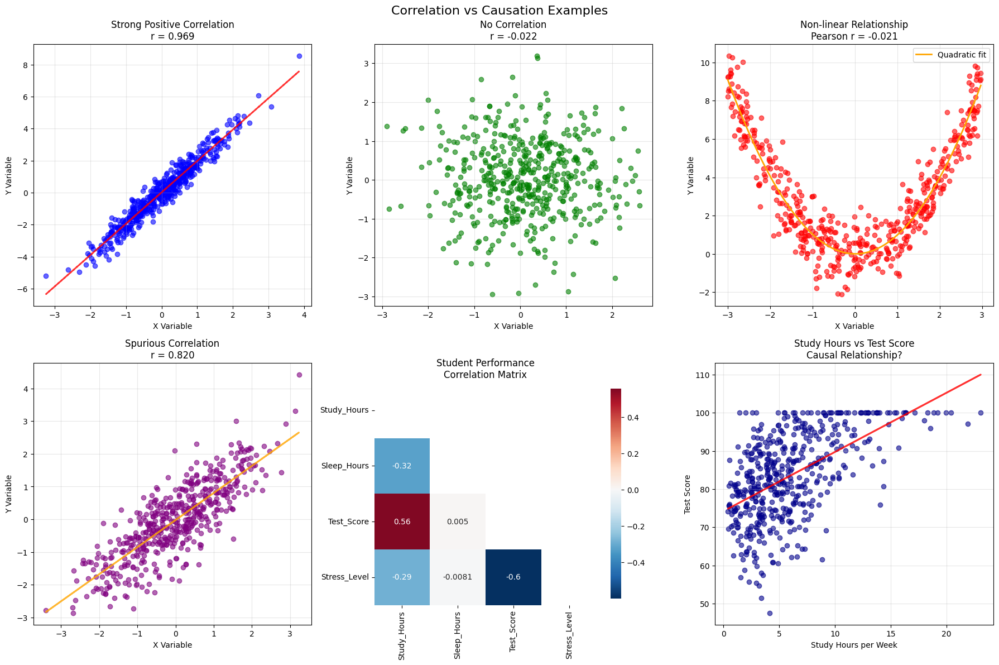

import matplotlib.pyplot as plt
years = [1950, 1960, 1970, 1980, 1990, 2000, 2010]
gdp = [300.2, 543.3, 1075.9, 2862.5, 5979.6, 10289.7, 14958.3]
# create a line chart, years on x-axis, gdp on y-axis
plt.plot(years, gdp, color='green', marker='o', linestyle='solid')
# add a title
plt.title("Nominal GDP")
# add a label to the y-axis
plt.ylabel("Billions of $")
# save the plot as a PNG file
# plt.savefig('img/viz_gdp.png')
plt.show()
1. Introduction to Data Science
1.1 Basic Concepts and Definitions
1.1.1 What is Data Science?
There’s a common joke that a data scientist is someone who knows more statistics than a computer scientist and more computer science than a statistician. (Whether or not it’s funny is up for debate.) Like all good jokes, though, it contains a kernel of truth. Some data scientists resemble statisticians who happen to code, while others look more like software engineers who dabble in analytics. Some are cutting-edge machine learning experts, while others focus primarily on business reporting or experimentation. There are PhDs with lengthy publication lists, and there are practitioners who have never opened an academic paper. In short, “data science” is notoriously hard to pin down, because almost any definition risks excluding someone who legitimately practices it.
Still, the attempt at definition is worthwhile. At its core, we can say that data science is about extracting insight from messy, real-world data. The people who do this go by many titles—data scientist, data analyst, machine learning engineer, statistician, or business intelligence analyst. Even software engineers, researchers, and domain experts frequently find themselves doing the work of data science, whether or not it appears in their job description.

The first diagram helps explain why data science is so difficult to define. It shows that data science sits at the intersection of computer science, mathematics & statistics, and domain knowledge. A successful data scientist combines all three: they need programming and software skills to manipulate data at scale, statistical and mathematical understanding to interpret results rigorously, and domain expertise to make those results meaningful in context. Add in machine learning, and you see how easily the field overlaps with multiple other disciplines.

The second diagram adds further clarity by mapping how different data-related roles emphasize different skill sets. Software engineers lean toward programming and system design, while data engineers focus on databases, pipelines, and scalable architectures. Data analysts center on reporting, visualization, and business understanding. Data scientists, meanwhile, sit in the overlap: they must balance coding ability, mathematical rigor, and communication skills to bridge technical work with actionable insight.
This overlap also underscores another key truth: data science is collaborative by nature. No one person masters the full breadth of skills in both diagrams. Data scientists usually work closely with engineers, analysts, domain experts, and business stakeholders. Technical proficiency alone is not enough—effective communication, critical thinking, and teamwork are equally essential to transform raw data into decisions that matter.
In this sense, data science is best seen not as a rigid job title, but as a mode of problem-solving that blends disciplines. The diversity of backgrounds among practitioners isn’t a weakness—it’s the very thing that makes the field so dynamic and impactful.
1.1.1 Methodology of Data Science
The data science process is an iterative and interdisciplinary workflow that transforms raw data into actionable knowledge. While the exact steps may vary depending on the project, industry, or team, the process generally includes the following key stages:
Problem Definition: The process begins with a clear understanding of the problem to be solved or the question to be answered. This step often requires close collaboration with domain experts and stakeholders to ensure the problem is framed in a way that is both meaningful and solvable with data. A poorly defined problem can derail the entire process, making this stage critical.
Data Collection: Relevant data must then be gathered from diverse sources, which may include relational databases, APIs, web scraping, sensors, surveys, or third-party datasets. At this stage, considerations such as data accessibility, privacy, and quality play a major role in determining the project’s feasibility.
Data Cleaning and Preprocessing: Raw data is rarely analysis-ready. This step involves addressing missing values, correcting inconsistencies, removing duplicates, and transforming variables into usable formats. Depending on the project, preprocessing may also involve scaling, normalization, text parsing, or image transformation. High-quality preprocessing is essential, since poor data hygiene undermines all subsequent stages.
Exploratory Data Analysis (EDA): Before formal modeling, data scientists perform EDA to uncover structure, detect anomalies, visualize distributions, and generate initial hypotheses. This step combines statistical methods, visualization tools, and domain knowledge to shape an intuitive understanding of the dataset and guide later decisions about modeling.
Feature Engineering: Raw data rarely contains all the information needed for predictive modeling. Data scientists therefore create new variables or transform existing ones to capture relevant patterns. Examples include aggregating time-series signals, encoding categorical variables, or constructing interaction terms. Good feature engineering often determines whether a model succeeds or fails.
Model Selection and Training: With features prepared, data scientists select suitable algorithms based on the problem type (classification, regression, clustering, etc.), the data structure, and performance trade-offs. The chosen models are then trained on the dataset, often using cross-validation to tune hyperparameters and prevent overfitting.
Model Evaluation: Trained models must be rigorously evaluated using appropriate metrics, such as accuracy, precision, recall, F1-score, ROC-AUC, or mean squared error, depending on the task. Evaluation also includes robustness testing, fairness assessments, and comparisons with baseline methods to ensure the model adds genuine value.
Model Deployment: Once validated, the model is deployed into a production environment where it can generate predictions on new, unseen data. Deployment may involve integrating the model into applications, dashboards, or automated decision systems, often requiring collaboration with software engineers and DevOps teams.
Monitoring and Maintenance: The data science process does not end with deployment. Models degrade over time due to changing data distributions, user behavior, or external factors—a phenomenon known as data drift. Continuous monitoring, retraining, and updating ensure the model remains reliable and relevant.
This cycle is iterative rather than strictly linear. Insights from later stages (such as poor model performance) often lead to revisiting earlier steps (such as redefining features or collecting additional data). Just as the diagrams showed, successful data science requires more than technical execution: it depends on problem framing, communication, domain expertise, and collaboration across multiple roles.
1.2 Fundamentals for Data Scientists
1.2.1 Visualizing Data
A fundamental part of the data scientist’s toolkit is data visualization. Although it is very easy to create visualizations, it’s much harder to produce good ones. There are two primary uses for data visualization:
- To explore the data and find patterns, trends, and anomalies.
- To communicate results to others.
A wide variety of tools exist for visualizing data. We will be using matplotlib, which is a popular Python library for creating visualizations. It provides a wide range of tools and functions to create various types of plots and charts. To install Matplotlib, you can use pip, the Python package manager. Open your terminal or command prompt and run the following command:
pip install matplotlibWe will be using the matplotlib.pyplot module. In it’s simplest use, pyplot maintains an internal state in which you build up a visualization step by step. Once you’re done, you can save it with savefig or display it with show. For example, making simple plots is pretty simple:
Making plots that look publication-quality good is more complicated. There are many ways you can customize your charts with, for example, axis labels, line styles, and point markers. Rather than attempt a comprehensive treatment of these options, we’ll just use (and call attention to) some of them in our examples. Although we won’t be using much of this functionality, matplotlib is capable of producing complicated plots within plots, sophisticated formatting, and interactive visualizations. Check out the matplotlib documentation if you want to go deeper.
Bar Charts
A bar chart is a good choice when you want to show how some quantity varies among some discrete set of items. For instance, the next figure shows how many Academy Awards were won by each of a variety of movies:
movies = ["Annie Hall", "Ben-Hur", "Casablanca", "Gandhi", "West Side Story"]
num_oscars = [5, 11, 3, 8, 10]
# plot bars with left x-coordinates [0, 1, 2, 3, 4], heights [num_oscars]
plt.bar(range(len(movies)), num_oscars)
plt.title("My Favorite Movies") # add a title
plt.ylabel("# of Academy Awards") # label the y-axis
# label x-axis with movie names at bar centers
plt.xticks(range(len(movies)), movies)
# save the plot as a PNG file
# plt.savefig('img/viz_movies.png')
plt.show()A bar chart can also be a good choice for plotting histograms of bucketed numeric values, as in the next figure , in order to visually explore how the values are distributed:
from collections import Counter
grades = [83, 95, 91, 87, 70, 0, 85, 82, 100, 67, 73, 77, 0]
# Bucket grades by decile, but put 100 in with the 90s
histogram = Counter(min(grade // 10 * 10, 90) for grade in grades)
plt.bar([x + 5 for x in histogram.keys()], # Shift bars right by 5
list(histogram.values()), # Give each bar its correct height
10, # Give each bar a width of 8
edgecolor=(0, 0, 0)) # Black edges for each bar
plt.axis((-5, 105, 0, 5)) # x-axis from -5 to 105,
# y-axis from 0 to 5
plt.xticks([10 * i for i in range(11)]) # x-axis labels at 0, 10, ..., 100
plt.xlabel("Decile")
plt.ylabel("# of Students")
plt.title("Distribution of Exam 1 Grades")
# save the plot as a PNG file
# plt.savefig('img/viz_grades.png')
plt.show()The third argument to plt.bar specifies the bar width. Here we chose a width of 10, to fill the entire decile. We also shifted the bars right by 5, so that, for example, the “10” bar (which corresponds to the decile 10–20) would have its center at 15 and hence occupy the correct range. We also added a black edge to eacch bar to make them visually distinct.
The call to plt.axis indicates that we want the x-axis to range from –5 to 105 (just to leave a little space on the left and right), and that the y-axis should range from 0 to 5. And the call to plt.xticks puts x-axis labels at 0, 10, 20, …, 100. Be judicious when using plt.axis. When creating bar charts it is considered especially bad form for your y-axis not to start at 0, since this is an easy way to mislead people:
mentions = [500, 505]
years = [2017, 2018]
plt.bar(years, mentions, 0.8)
plt.xticks(years)
plt.ylabel("# of times I heard someone say 'data science'")
# if you don't do this, matplotlib will label the x-axis 0, 1
# and then add a +2.013e3 off in the corner (bad matplotlib!)
plt.ticklabel_format(useOffset=False)
# misleading y-axis only shows the part above 500
plt.axis((2016.5, 2018.5, 499, 506))
plt.title("Look at the 'Huge' Increase!")
# save the plot as a PNG file
# plt.savefig('img/viz_misleading_y_axis.png')
plt.show()Here we use more sensible axes, and it looks far less impressive:
plt.bar(years, mentions, 0.8)
plt.xticks(years)
plt.ylabel("# of times I heard someone say 'data science'")
plt.ticklabel_format(useOffset=False)
plt.axis((2016.5, 2018.5, 0, 550))
plt.title("Not So Huge Anymore")
# save the plot as a PNG file
# plt.savefig('img/viz_non_misleading_y_axis.png')
plt.show()Line Charts
As we saw already, we can make line charts using plt.plot. These are a good choice for showing trends:
variance = [1, 2, 4, 8, 16, 32, 64, 128, 256]
bias_squared = [256, 128, 64, 32, 16, 8, 4, 2, 1]
total_error = [x + y for x, y in zip(variance, bias_squared)]
xs = [i for i, _ in enumerate(variance)]
# We can make multiple calls to plt.plot
# to show multiple series on the same chart
plt.plot(xs, variance, 'g-', label='variance') # green solid line
plt.plot(xs, bias_squared, 'r-.', label='bias^2') # red dot-dashed line
plt.plot(xs, total_error, 'b:', label='total error') # blue dotted line
# Because we've assigned labels to each series,
# we can get a legend for free (loc=9 means "top center")
plt.legend(loc=9)
plt.xlabel("model complexity")
plt.xticks([])
plt.title("The Bias-Variance Tradeoff")
# save the plot as a PNG file
# plt.savefig('img/viz_line_chart.png')
plt.show()
Scatterplots
A scatterplot is the right choice for visualizing the relationship between two paired sets of data. For example, the next visualization illustrates the relationship between the number of friends your users have and the number of minutes they spend on the site every day:
friends = [ 70, 65, 72, 63, 71, 64, 60, 64, 67]
minutes = [175, 170, 205, 120, 220, 130, 105, 145, 190]
labels = ['a', 'b', 'c', 'd', 'e', 'f', 'g', 'h', 'i']
plt.scatter(friends, minutes)
# label each point
for label, friend_count, minute_count in zip(labels, friends, minutes):
plt.annotate(label,
xy=(friend_count, minute_count), # Put the label with its point
xytext=(5, -5), # but slightly offset
textcoords='offset points')
plt.title("Daily Minutes vs. Number of Friends")
plt.xlabel("# of friends")
plt.ylabel("daily minutes spent on the site")
# save the plot as a PNG file
# plt.savefig('img/viz_scatterplot.png')
plt.show()
If you’re scattering comparable variables, you might get a misleading picture if you let matplotlib choose the scale.
test_1_grades = [ 99, 90, 85, 97, 80]
test_2_grades = [100, 85, 60, 90, 70]
plt.scatter(test_1_grades, test_2_grades)
plt.title("Axes Aren't Comparable")
plt.xlabel("test 1 grade")
plt.ylabel("test 2 grade")
# save the plot as a PNG file
# plt.savefig('img/viz_scatterplot_axes_not_comparable.png')
plt.show()If we include a call to plt.axis("equal"), the plot more accurately shows that most of the variation occurs on test 2.
test_1_grades = [99, 90, 85, 97, 80]
test_2_grades = [100, 85, 60, 90, 70]
plt.scatter(test_1_grades, test_2_grades)
plt.title("Axes Are Comparable")
plt.axis("equal")
plt.xlabel("test 1 grade")
plt.ylabel("test 2 grade")
# save the plot as a PNG file
# plt.savefig('img/viz_scatterplot_axes_comparable.png')
plt.show()For Further Exploration
- Matplotlib Gallery will give you a good idea of the sorts of things you can do with matplotlib (and how to do them).
- Seaborn is a higher-level visualization library built on top of matplotlib that provides a more user-friendly interface and additional features for creating attractive and informative statistical graphics.
- Altair is a declarative statistical visualization library for Python. It allows you to create complex visualizations with concise and expressive code.
- Plotly is another popular visualization library that allows for interactive and web-based visualizations. It provides a wide range of chart types and customization options.
- D3.js is a JavaScript library for creating interactive and dynamic visualizations on the web. While it is not a Python library, it is widely used for data visualization and can be integrated with Python using libraries like Bokeh or Dash.
1.2.2 Linear Algebra
Vectors
A vector is a mathematical object that represents both magnitude (size) and direction. In data science, we think of vectors as ordered lists of numbers that can represent data points, features, or measurements. Geometrically, a vector can be visualized as an arrow pointing from the origin to a specific point in space.
Vectors are fundamental building blocks in linear algebra and essential for:
- Storing and manipulating data
- Representing features in machine learning
- Performing mathematical operations on datasets
- Computing distances and similarities between data points
A vector has countless practical applications. In physics, a vector is often thought of as a direction and magnitude. In math, it is a direction and scale on an XY plane, kind of like a movement. In computer science, it is an array of numbers storing data. The computer science context is the one we will become the most familiar with as data science professionals.
Mathematical Notation:
We represent vectors using lowercase letters with arrows: \(\vec{v}\), \(\vec{w}\), or in column form:
\[\vec{v} = \begin{bmatrix} v_1 \\ v_2 \\ \vdots \\ v_n \end{bmatrix}\]
Types of Vectors
Row Vector: Numbers arranged horizontally \[\vec{v} = [v_1, v_2, v_3, ..., v_n]\]
Column Vector: Numbers arranged vertically \[\vec{v} = \begin{bmatrix} v_1 \\ v_2 \\ v_3 \\ \vdots \\ v_n \end{bmatrix}\]
Unit Vector: A vector with magnitude (length) equal to 1
Zero Vector: A vector where all components are zero \[\vec{0} = \begin{bmatrix} 0 \\ 0 \\ 0 \end{bmatrix}\]
To emphasize again, the purpose of the vector is to visually represent a piece of data. If you have a data record for the square footage of a house 18,000 square feet and its valuation $260,000, we could express that as a vector [18000, 2600000], stepping 18,000 steps in the horizontal direction and 260,000 steps in the vertical direction.
We can declare a vector mathematically like this:
\(\vec{v} = \begin{bmatrix} 3 , 2 \end{bmatrix}\)
We can declare a vector using a simple Python collection, like a Python list:
v = [3, 2]
print(v)[3, 2]However, when we start doing mathematical computations with vectors, especially when doing tasks like machine learning, we should probably use the numpy library as it is more efficient than plain Python. You can also use sympy to perform linear algebra operations; however, numpy is what you will likely use in practice so that is what we will mainly stick to. To declare a vector, you can use NumPy’s array() function and then can pass a collection of numbers to it
import numpy as np
# Creating a basic 2D vector
v = np.array([3, 3])
print("2D Vector:")
print(f"v = {v}")
print(f"Type: {type(v)}")
print(f"Shape: {v.shape}")
print(f"Dimension: {v.ndim}")2D Vector:
v = [3 3]
Type: <class 'numpy.ndarray'>
Shape: (2,)
Dimension: 1Note also vectors can exist on more than two dimensions. Next we declare a three- dimensional vector along axes \(x\), \(y\), and \(z\):
\(\vec{v} = \begin{bmatrix} 4 , 1 , 2 \end{bmatrix}\)
Naturally, we can express this three-dimensional vector in Python using three numeric values:
# 3D vector
v3d = np.array([4, 1, 2])
print("3D Vector:")
print(f"v3d = {v3d}")3D Vector:
v3d = [4 1 2]Or something like:
\(\vec{v} = \begin{bmatrix} 6 , 1 , 5 , 8 , 3 \end{bmatrix}\)
# Higher dimensional vector (5D)
v5d = np.array([6, 1, 5, 8, 3])
print("\n5D Vector:")
print(f"v5d = {v5d}")
5D Vector:
v5d = [6 1 5 8 3]Vector properties and operations
# Calculate vector magnitude (length)
v = np.array([3, 4])
magnitude = np.linalg.norm(v)
print(f"Vector v = {v}")
print(f"Magnitude of v = {magnitude}")
# Create unit vector (normalize)
unit_v = v / magnitude
print(f"Unit vector = {unit_v}")
print(f"Unit vector magnitude = {np.linalg.norm(unit_v)}")
# Zero vector
zero_vector = np.zeros(3)
print(f"Zero vector: {zero_vector}")
# Vector of ones
ones_vector = np.ones(4)
print(f"Ones vector: {ones_vector}")Vector v = [3 4]
Magnitude of v = 5.0
Unit vector = [0.6 0.8]
Unit vector magnitude = 1.0
Zero vector: [0. 0. 0.]
Ones vector: [1. 1. 1. 1.]# Vector addition and subtraction
v1 = np.array([2, 3, 1])
v2 = np.array([1, -1, 4])
# Addition
v_sum = v1 + v2
print(f"v1 = {v1}")
print(f"v2 = {v2}")
print(f"v1 + v2 = {v_sum}")
# Subtraction
v_diff = v1 - v2
print(f"v1 - v2 = {v_diff}")
# Element-wise operations
v_mult = v1 * v2 # Element-wise multiplication
print(f"v1 * v2 (element-wise) = {v_mult}")v1 = [2 3 1]
v2 = [ 1 -1 4]
v1 + v2 = [3 2 5]
v1 - v2 = [ 1 4 -3]
v1 * v2 (element-wise) = [ 2 -3 4]# Scalar multiplication (scaling)
v = np.array([2, -3, 1])
scalar = 2.5
# Scale the vector
scaled_v = scalar * v
print(f"Original vector: {v}")
print(f"Scalar: {scalar}")
print(f"Scaled vector: {scaled_v}")
# Scaling changes magnitude but not direction (unless scalar is negative)
print(f"Original magnitude: {np.linalg.norm(v):.2f}")
print(f"Scaled magnitude: {np.linalg.norm(scaled_v):.2f}")
print(f"Magnitude ratio: {np.linalg.norm(scaled_v) / np.linalg.norm(v):.2f}")Original vector: [ 2 -3 1]
Scalar: 2.5
Scaled vector: [ 5. -7.5 2.5]
Original magnitude: 3.74
Scaled magnitude: 9.35
Magnitude ratio: 2.50# Dot product (scalar product)
v1 = np.array([1, 2, 3])
v2 = np.array([4, 5, 6])
# Calculate dot product
dot_product = np.dot(v1, v2)
print(f"v1 = {v1}")
print(f"v2 = {v2}")
print(f"Dot product v1 · v2 = {dot_product}")
# Alternative syntax
dot_product_alt = v1 @ v2 # Matrix multiplication operator
print(f"Alternative syntax: v1 @ v2 = {dot_product_alt}")
# Geometric interpretation: dot product relates to angle between vectors
angle_cos = dot_product / (np.linalg.norm(v1) * np.linalg.norm(v2))
angle_rad = np.arccos(angle_cos)
angle_deg = np.degrees(angle_rad)
print(f"Angle between vectors: {angle_deg:.2f} degrees")v1 = [1 2 3]
v2 = [4 5 6]
Dot product v1 · v2 = 32
Alternative syntax: v1 @ v2 = 32
Angle between vectors: 12.93 degrees# Vector indexing and slicing
data = np.array([10, 20, 30, 40, 50, 60])
print(f"Original vector: {data}")
# Access single elements
print(f"First element: {data[0]}")
print(f"Last element: {data[-1]}")
print(f"Third element: {data[2]}")
# Slicing
print(f"First three elements: {data[:3]}")
print(f"Last two elements: {data[-2:]}")
print(f"Middle elements: {data[2:4]}")
print(f"Every second element: {data[::2]}")
# Boolean indexing
mask = data > 30
print(f"Elements greater than 30: {data[mask]}")
# Find indices where condition is true
indices = np.where(data > 30)
print(f"Indices where data > 30: {indices[0]}")Original vector: [10 20 30 40 50 60]
First element: 10
Last element: 60
Third element: 30
First three elements: [10 20 30]
Last two elements: [50 60]
Middle elements: [30 40]
Every second element: [10 30 50]
Elements greater than 30: [40 50 60]
Indices where data > 30: [3 4 5]# Creating special vectors
# Range-based vectors
range_vector = np.arange(0, 10, 2) # Start, stop, step
print(f"Range vector: {range_vector}")
# Linearly spaced vectors
linear_space = np.linspace(0, 1, 5) # Start, stop, number of points
print(f"Linear space: {linear_space}")
# Random vectors
np.random.seed(42) # For reproducible results
random_vector = np.random.randint(1, 10, size=5)
print(f"Random integers: {random_vector}")
random_normal = np.random.normal(0, 1, 5) # Mean=0, std=1, size=5
print(f"Random normal: {random_normal}")
# Vector from list
list_data = [1.5, 2.7, 3.1, 4.8, 5.2]
vector_from_list = np.array(list_data)
print(f"From list: {vector_from_list}")Range vector: [0 2 4 6 8]
Linear space: [0. 0.25 0.5 0.75 1. ]
Random integers: [7 4 8 5 7]
Random normal: [-0.91682684 -0.12414718 -2.01096289 -0.49280342 0.39257975]
From list: [1.5 2.7 3.1 4.8 5.2]Manipulating Data Is Manipulating Vectors: Every data operation can be thought of in terms of vectors, even simple averages. Take scaling, for example. Let’s say we were trying to get the average house value and average square footage for an entire neighborhood. We would add the vectors together to combine their value and square footage respectively, giving us one giant vector containing both total value and total square footage. We then scale down the vector by dividing by the number of houses N , which really is multiplying by 1/ N . We now have a vector containing the average house value and average square footage.
# Vector operations for data analysis
# Sales data over 6 months
sales_q1 = np.array([10000, 12000, 15000]) # Jan, Feb, Mar
sales_q2 = np.array([18000, 20000, 22000]) # Apr, May, Jun
print("Sales Data:")
print(f"Q1 Sales: {sales_q1}")
print(f"Q2 Sales: {sales_q2}")
# Calculate quarterly growth
growth = sales_q2 - sales_q1
print(f"Monthly Growth: {growth}")
# Calculate growth percentage
growth_percentage = (growth / sales_q1) * 100
print(f"Growth Percentage: {growth_percentage}%")
# Total sales for each quarter
q1_total = np.sum(sales_q1)
q2_total = np.sum(sales_q2)
print(f"\nQ1 Total: ${q1_total:,}")
print(f"Q2 Total: ${q2_total:,}")
# Average monthly sales
q1_avg = np.mean(sales_q1)
q2_avg = np.mean(sales_q2)
print(f"Q1 Average: ${q1_avg:,.0f}")
print(f"Q2 Average: ${q2_avg:,.0f}")Sales Data:
Q1 Sales: [10000 12000 15000]
Q2 Sales: [18000 20000 22000]
Monthly Growth: [8000 8000 7000]
Growth Percentage: [80. 66.66666667 46.66666667]%
Q1 Total: $37,000
Q2 Total: $60,000
Q1 Average: $12,333
Q2 Average: $20,000Matrices
A matrix is a rectangular array of numbers arranged in rows and columns. Matrices are fundamental structures in linear algebra and serve as powerful tools for representing and manipulating data in data science. Think of a matrix as a collection of vectors arranged side by side, or as a way to organize data in a tabular format.
Mathematically, we represent a matrix using capital letters like \(A\), \(B\), or \(M\). A matrix with \(m\) rows and \(n\) columns is called an \(m \times n\) matrix:
\[A = \begin{bmatrix} a_{11} & a_{12} & \cdots & a_{1n} \\ a_{21} & a_{22} & \cdots & a_{2n} \\ \vdots & \vdots & \ddots & \vdots \\ a_{m1} & a_{m2} & \cdots & a_{mn} \end{bmatrix}\]
For example, a \(2 \times 3\) matrix looks like:
\[A = \begin{bmatrix} 1 & 2 & 3 \\ 4 & 5 & 6 \end{bmatrix}\]
In data science, matrices are everywhere. A dataset with multiple features for multiple observations is essentially a matrix where each row represents an observation and each column represents a feature.
Types of Matrices
Square Matrix: A matrix where the number of rows equals the number of columns (\(n \times n\)).
\[A = \begin{bmatrix} 1 & 2 & 3 \\ 4 & 5 & 6 \\ 7 & 8 & 9 \end{bmatrix}\]
Identity Matrix: A special square matrix with 1s on the diagonal and 0s elsewhere. It’s the matrix equivalent of the number 1 in multiplication.
\[I = \begin{bmatrix} 1 & 0 & 0 \\ 0 & 1 & 0 \\ 0 & 0 & 1 \end{bmatrix}\]
Zero Matrix: A matrix where all elements are zero.
\[O = \begin{bmatrix} 0 & 0 & 0 \\ 0 & 0 & 0 \end{bmatrix}\]
Diagonal Matrix: A square matrix where all non-diagonal elements are zero.
\[D = \begin{bmatrix} 3 & 0 & 0 \\ 0 & 5 & 0 \\ 0 & 0 & 2 \end{bmatrix}\]
Let’s see how to work with these matrices using NumPy:
# Creating a basic matrix (2x3)
A = np.array([[1, 2, 3],
[4, 5, 6]])
print("Matrix A:")
print(A)
print(f"Shape: {A.shape}")
print(f"Dimension: {A.ndim}")
print(f"Type: {type(A)}")Matrix A:
[[1 2 3]
[4 5 6]]
Shape: (2, 3)
Dimension: 2
Type: <class 'numpy.ndarray'># Creating a square matrix (3x3)
B = np.array([[1, 2, 3],
[4, 5, 6],
[7, 8, 9]])
print("Square Matrix B:")
print(B)
print(f"Shape: {B.shape}")Square Matrix B:
[[1 2 3]
[4 5 6]
[7 8 9]]
Shape: (3, 3)# Creating an identity matrix
I = np.eye(3) # 3x3 identity matrix
print("Identity Matrix:")
print(I)Identity Matrix:
[[1. 0. 0.]
[0. 1. 0.]
[0. 0. 1.]]# Creating a zero matrix
zeros = np.zeros((2, 4)) # 2x4 zero matrix
print("Zero Matrix:")
print(zeros)Zero Matrix:
[[0. 0. 0. 0.]
[0. 0. 0. 0.]]# Creating a diagonal matrix
diagonal_values = [3, 5, 2]
D = np.diag(diagonal_values)
print("Diagonal Matrix:")
print(D)Diagonal Matrix:
[[3 0 0]
[0 5 0]
[0 0 2]]Matrix operations
# Matrix addition (matrices must have the same dimensions)
A1 = np.array([[1, 2],
[3, 4]])
A2 = np.array([[5, 6],
[7, 8]])
matrix_sum = A1 + A2
print("Matrix Addition:")
print(f"A1 + A2 = \n{matrix_sum}")Matrix Addition:
A1 + A2 =
[[ 6 8]
[10 12]]# Scalar multiplication
scalar = 3
scaled_matrix = scalar * A1
print("Scalar Multiplication:")
print(f"3 * A1 = \n{scaled_matrix}")Scalar Multiplication:
3 * A1 =
[[ 3 6]
[ 9 12]]# Matrix transpose (swap rows and columns)
original = np.array([[1, 2, 3],
[4, 5, 6]])
transposed = original.T # or np.transpose(original)
print("Original Matrix:")
print(original)
print("Transposed Matrix:")
print(transposed)Original Matrix:
[[1 2 3]
[4 5 6]]
Transposed Matrix:
[[1 4]
[2 5]
[3 6]]# Accessing matrix elements
matrix = np.array([[10, 20, 30],
[40, 50, 60],
[70, 80, 90]])
print("Full matrix:")
print(matrix)
print(f"Element at row 1, column 2: {matrix[1, 2]}") # Remember: 0-indexed
print(f"First row: {matrix[0, :]}")
print(f"Second column: {matrix[:, 1]}")
print(f"Submatrix (first 2x2): \n{matrix[:2, :2]}")Full matrix:
[[10 20 30]
[40 50 60]
[70 80 90]]
Element at row 1, column 2: 60
First row: [10 20 30]
Second column: [20 50 80]
Submatrix (first 2x2):
[[10 20]
[40 50]]# Practical example: Student grades matrix
# Rows represent students, columns represent subjects
grades = np.array([[85, 92, 78, 90], # Student 1: Math, Science, English, History
[79, 85, 88, 92], # Student 2
[92, 88, 85, 87], # Student 3
[88, 90, 92, 85]]) # Student 4
subjects = ['Math', 'Science', 'English', 'History']
students = ['Alice', 'Bob', 'Charlie', 'Diana']
print("Student Grades Matrix:")
print(grades)
print(f"Shape: {grades.shape} (4 students, 4 subjects)")
# Calculate average grade per student
student_averages = np.mean(grades, axis=1) # axis=1 means across columns
print("\nAverage grades per student:")
for i, student in enumerate(students):
print(f"{student}: {student_averages[i]:.2f}")
# Calculate average grade per subject
subject_averages = np.mean(grades, axis=0) # axis=0 means across rows
print("\nAverage grades per subject:")
for i, subject in enumerate(subjects):
print(f"{subject}: {subject_averages[i]:.2f}")Student Grades Matrix:
[[85 92 78 90]
[79 85 88 92]
[92 88 85 87]
[88 90 92 85]]
Shape: (4, 4) (4 students, 4 subjects)
Average grades per student:
Alice: 86.25
Bob: 86.00
Charlie: 88.00
Diana: 88.75
Average grades per subject:
Math: 86.00
Science: 88.75
English: 85.75
History: 88.50Determinants
A determinant is a scalar value that can be calculated from a square matrix. It provides important information about the matrix’s properties and has numerous applications in linear algebra, geometry, and data science. The determinant tells us whether a matrix is invertible, how it transforms areas and volumes, and is crucial for solving systems of linear equations.
Mathematical Notation:
For a square matrix \(A\), we denote its determinant as \(\det(A)\) or \(|A|\).
Key Properties of Determinants:
- Only square matrices have determinants
- If \(\det(A) = 0\), the matrix is singular (non-invertible)
- If \(\det(A) \neq 0\), the matrix is invertible
- The determinant represents the scaling factor of the linear transformation
- For a 2D matrix, it represents the area scaling factor; for 3D, the volume scaling factor
Geometric Interpretation:
The absolute value of the determinant tells us how much the matrix scales areas (in 2D) or volumes (in 3D). A negative determinant indicates that the transformation reverses orientation.
Applications in Data Science:
- Checking if a system of equations has a unique solution
- Computing matrix inverses
- Principal Component Analysis (PCA)
- Measuring multicollinearity in regression analysis
- Volume calculations in high-dimensional spaces
# Calculate determinant of a 2x2 matrix
A_2x2 = np.array([[1, 2],
[2, 5]])
det_A = np.linalg.det(A_2x2)
print("2x2 Matrix:")
print(A_2x2)
print(f"Determinant: {det_A}")
# Manual calculation for 2x2: ad - bc
manual_det = A_2x2[0,0] * A_2x2[1,1] - A_2x2[0,1] * A_2x2[1,0]
print(f"Manual calculation: {manual_det}")2x2 Matrix:
[[1 2]
[2 5]]
Determinant: 1.0
Manual calculation: 1# Calculate determinant of a 3x3 matrix
A_3x3 = np.array([[1, 2, 3],
[0, 1, 4],
[5, 6, 0]])
det_A_3x3 = np.linalg.det(A_3x3)
print("3x3 Matrix:")
print(A_3x3)
print(f"Determinant: {det_A_3x3:.2f}")3x3 Matrix:
[[1 2 3]
[0 1 4]
[5 6 0]]
Determinant: 1.00# Special matrices and their determinants
# Identity matrix - determinant is always 1
I = np.eye(3)
print("Identity Matrix:")
print(I)
print(f"Determinant: {np.linalg.det(I)}")
# Diagonal matrix - determinant is product of diagonal elements
D = np.diag([4, 4, 2])
print("\nDiagonal Matrix:")
print(D)
print(f"Determinant: {np.linalg.det(D)}")
print(f"Product of diagonal elements: {4 * 4 * 2}")Identity Matrix:
[[1. 0. 0.]
[0. 1. 0.]
[0. 0. 1.]]
Determinant: 1.0
Diagonal Matrix:
[[4 0 0]
[0 4 0]
[0 0 2]]
Determinant: 32.0
Product of diagonal elements: 32# Singular matrix (determinant = 0)
singular_matrix = np.array([[1, 2, 3],
[2, 4, 6],
[1, 1, 1]])
det_singular = np.linalg.det(singular_matrix)
print("Singular Matrix (rows are linearly dependent):")
print(singular_matrix)
print(f"Determinant: {det_singular:.10f}") # Should be very close to 0
# This matrix is not invertible
try:
inverse = np.linalg.inv(singular_matrix)
except np.linalg.LinAlgError as e:
print(f"Cannot invert: {e}")Singular Matrix (rows are linearly dependent):
[[1 2 3]
[2 4 6]
[1 1 1]]
Determinant: 0.0000000000
Cannot invert: Singular matrix# Properties of determinants
A = np.array([[2, 1],
[3, 4]])
B = np.array([[1, 2],
[0, 3]])
print("Matrix A:")
print(A)
print(f"det(A) = {np.linalg.det(A)}")
print("\nMatrix B:")
print(B)
print(f"det(B) = {np.linalg.det(B)}")
# Property: det(AB) = det(A) * det(B)
AB = A @ B
print(f"\nA @ B:")
print(AB)
print(f"det(AB) = {np.linalg.det(AB)}")
print(f"det(A) * det(B) = {np.linalg.det(A) * np.linalg.det(B)}")
# Property: det(A^T) = det(A)
A_transpose = A.T
print(f"\ndet(A^T) = {np.linalg.det(A_transpose)}")
print(f"det(A) = {np.linalg.det(A)}")Matrix A:
[[2 1]
[3 4]]
det(A) = 5.000000000000001
Matrix B:
[[1 2]
[0 3]]
det(B) = 3.0000000000000004
A @ B:
[[ 2 7]
[ 3 18]]
det(AB) = 15.0
det(A) * det(B) = 15.000000000000005
det(A^T) = 5.000000000000001
det(A) = 5.000000000000001# Practical example: Checking system solvability
# System of equations:
# 2x + 3y = 7
# 4x + 6y = 14
# Coefficient matrix
coeff_matrix = np.array([[2, 3],
[4, 6]])
# Constants vector
constants = np.array([7, 14])
det_coeff = np.linalg.det(coeff_matrix)
print("Coefficient Matrix:")
print(coeff_matrix)
print(f"Determinant: {det_coeff}")
if abs(det_coeff) < 1e-10: # Close to zero
print("System has no unique solution (infinite solutions or no solution)")
# Check if system is consistent
augmented = np.column_stack([coeff_matrix, constants])
rank_coeff = np.linalg.matrix_rank(coeff_matrix)
rank_augmented = np.linalg.matrix_rank(augmented)
if rank_coeff == rank_augmented:
print("System has infinite solutions")
else:
print("System has no solution")
else:
print("System has a unique solution")
solution = np.linalg.solve(coeff_matrix, constants)
print(f"Solution: x = {solution[0]}, y = {solution[1]}")Coefficient Matrix:
[[2 3]
[4 6]]
Determinant: 0.0
System has no unique solution (infinite solutions or no solution)
System has infinite solutionsEigenvectors and Eigenvalues
Eigenvectors and eigenvalues are fundamental concepts in linear algebra that reveal the intrinsic properties of linear transformations. They are crucial for understanding how matrices act on vectors and have profound applications in data science, particularly in dimensionality reduction, principal component analysis (PCA), and machine learning.
Mathematical Definition:
For a square matrix \(A\), an eigenvector \(\vec{v}\) is a non-zero vector that, when multiplied by \(A\), results in a scalar multiple of itself:
\[A\vec{v} = \lambda\vec{v}\]
Where: - \(\vec{v}\) is the eigenvector (direction that doesn’t change) - \(\lambda\) (lambda) is the eigenvalue (scaling factor) - \(A\) is the square matrix
Geometric Interpretation:
When a matrix transforms a vector, most vectors change both direction and magnitude. However, eigenvectors are special - they only change in magnitude (scaled by the eigenvalue) but maintain their direction. Think of it as finding the “natural” directions of a transformation.
Key Properties:
- A matrix can have multiple eigenvector-eigenvalue pairs
- Eigenvectors corresponding to different eigenvalues are orthogonal
- The eigenvalues tell us how much the matrix stretches or shrinks in each eigenvector direction
- If eigenvalue λ > 1: stretching, if 0 < λ < 1: shrinking, if λ < 0: reflection
Applications in Data Science:
- Principal Component Analysis (PCA): Finding directions of maximum variance
- Dimensionality Reduction: Identifying most important features
- Google PageRank: Ranking web pages using eigenvectors
- Image Compression: Using eigenfaces for face recognition
- Stability Analysis: Determining system behavior in dynamic models
- Spectral Clustering: Graph-based clustering algorithms
# Basic example: Finding eigenvalues and eigenvectors
A = np.array([[3, 1],
[0, 2]])
# Calculate eigenvalues and eigenvectors
eigenvalues, eigenvectors = np.linalg.eig(A)
print("Matrix A:")
print(A)
print(f"\nEigenvalues: {eigenvalues}")
print(f"Eigenvectors:\n{eigenvectors}")
# Verify the eigenvalue equation: Av = λv
for i in range(len(eigenvalues)):
v = eigenvectors[:, i] # i-th eigenvector
lambda_val = eigenvalues[i] # i-th eigenvalue
Av = A @ v
lambda_v = lambda_val * v
print(f"\nEigenvector {i+1}: {v}")
print(f"A * v = {Av}")
print(f"λ * v = {lambda_v}")
print(f"Are they equal? {np.allclose(Av, lambda_v)}")Matrix A:
[[3 1]
[0 2]]
Eigenvalues: [3. 2.]
Eigenvectors:
[[ 1. -0.70710678]
[ 0. 0.70710678]]
Eigenvector 1: [1. 0.]
A * v = [3. 0.]
λ * v = [3. 0.]
Are they equal? True
Eigenvector 2: [-0.70710678 0.70710678]
A * v = [-1.41421356 1.41421356]
λ * v = [-1.41421356 1.41421356]
Are they equal? True# Symmetric matrix example (real eigenvalues, orthogonal eigenvectors)
S = np.array([[4, 2],
[2, 3]])
eigenvals_s, eigenvecs_s = np.linalg.eig(S)
print("Symmetric Matrix S:")
print(S)
print(f"Eigenvalues: {eigenvals_s}")
print(f"Eigenvectors:\n{eigenvecs_s}")
# Check orthogonality of eigenvectors
dot_product = np.dot(eigenvecs_s[:, 0], eigenvecs_s[:, 1])
print(f"\nDot product of eigenvectors: {dot_product:.10f}")
print(f"Eigenvectors are orthogonal: {abs(dot_product) < 1e-10}")Symmetric Matrix S:
[[4 2]
[2 3]]
Eigenvalues: [5.56155281 1.43844719]
Eigenvectors:
[[ 0.78820544 -0.61541221]
[ 0.61541221 0.78820544]]
Dot product of eigenvectors: 0.0000000000
Eigenvectors are orthogonal: True# 3D example
A_3d = np.array([[6, -2, 2],
[-2, 3, -1],
[2, -1, 3]])
eigenvals_3d, eigenvecs_3d = np.linalg.eig(A_3d)
print("3D Matrix:")
print(A_3d)
print(f"\nEigenvalues: {eigenvals_3d}")
print(f"\nEigenvectors:")
for i in range(len(eigenvals_3d)):
print(f"λ{i+1} = {eigenvals_3d[i]:.3f}, v{i+1} = {eigenvecs_3d[:, i]}")3D Matrix:
[[ 6 -2 2]
[-2 3 -1]
[ 2 -1 3]]
Eigenvalues: [8. 2. 2.]
Eigenvectors:
λ1 = 8.000, v1 = [ 0.81649658 -0.40824829 0.40824829]
λ2 = 2.000, v2 = [-0.57735027 -0.57735027 0.57735027]
λ3 = 2.000, v3 = [-0.11547005 0.57735027 0.80829038]# Practical example: Principal Component Analysis (PCA) basics
np.random.seed(42)
# Generate correlated 2D data
n_samples = 100
x1 = np.random.normal(0, 2, n_samples)
x2 = 1.5 * x1 + np.random.normal(0, 1, n_samples)
data = np.column_stack([x1, x2])
print("Original data shape:", data.shape)
# Center the data
data_centered = data - np.mean(data, axis=0)
# Calculate covariance matrix
cov_matrix = np.cov(data_centered.T)
print("Covariance Matrix:")
print(cov_matrix)
# Find principal components (eigenvectors of covariance matrix)
eigenvals_pca, eigenvecs_pca = np.linalg.eig(cov_matrix)
# Sort by eigenvalue (descending order)
idx = np.argsort(eigenvals_pca)[::-1]
eigenvals_pca = eigenvals_pca[idx]
eigenvecs_pca = eigenvecs_pca[:, idx]
print(f"\nPrincipal Component eigenvalues: {eigenvals_pca}")
print(f"Principal Component eigenvectors:\n{eigenvecs_pca}")
# The first eigenvector is the direction of maximum variance
print(f"\nFirst PC explains {eigenvals_pca[0]/(eigenvals_pca[0]+eigenvals_pca[1])*100:.1f}% of variance")
print(f"Second PC explains {eigenvals_pca[1]/(eigenvals_pca[0]+eigenvals_pca[1])*100:.1f}% of variance")Original data shape: (100, 2)
Covariance Matrix:
[[3.29907957 4.71231098]
[4.71231098 7.62348838]]
Principal Component eigenvalues: [10.64597323 0.27659473]
Principal Component eigenvectors:
[[-0.53989052 -0.84173525]
[-0.84173525 0.53989052]]
First PC explains 97.5% of variance
Second PC explains 2.5% of varianceFor Further Exploration
- 3Blue1Brown’s Linear Algebra Series provides intuitive visual explanations of linear algebra concepts, including eigenvectors and eigenvalues.
1.2.3 Probability and Statistics
Probability and statistics form the mathematical foundation of data science. While probability helps us model uncertainty and make predictions about future events, statistics provides tools to analyze data, test hypotheses, and draw meaningful conclusions. These concepts are essential for exploratory data analysis, hypothesis testing, and building robust machine learning models.
Key Areas We’ll Cover:
- Basic probability concepts and distributions
- Descriptive statistics and data summarization
- Statistical inference and hypothesis testing
- Bayes’ theorem and its applications
- Correlation and causation
- Statistical distributions commonly used in data science
Understanding these concepts is crucial for:
- Exploratory Data Analysis (EDA): Summarizing and visualizing data patterns
- Statistical Inference: Making conclusions about populations from samples
- Machine Learning: Understanding model assumptions and uncertainty
- Risk Assessment: Quantifying uncertainty in business decisions
Basic Probability Concepts
Probability is a measure of the likelihood that an event will occur, expressed as a number between 0 and 1, where:
- 0 means the event is impossible
- 1 means the event is certain
- 0.5 means the event has equal chances of occurring or not
Key Definitions:
Sample Space (S): The set of all possible outcomes of an experiment
- Rolling a dice: S = \(\{1, 2, 3, 4, 5, 6\}\)
- Flipping a coin: S = \(\{Heads, Tails\}\)
Event (E): A subset of the sample space
- Rolling an even number: E = \(\{2, 4, 6\}\)
- Getting heads: E = \(\{Heads\}\)
Probability of an Event: P(E) = (Number of favorable outcomes) / (Total number of possible outcomes)
Fundamental Rules:
- Addition Rule: P(A ∪ B) = P(A) + P(B) - P(A ∩ B)
- Multiplication Rule: P(A ∩ B) = P(A) × P(B|A)
- Complement Rule: P(A’) = 1 - P(A)
Conditional Probability: P(A|B) = P(A ∩ B) / P(B) The probability of event A given that event B has occurred.
Independence: Two events A and B are independent if P(A|B) = P(A) Or equivalently: P(A ∩ B) = P(A) × P(B)
import pandas as pd
import seaborn as sns
from scipy import stats
# Set style for better visualizations
plt.style.use('default')
sns.set_palette("husl")
# Basic probability examples
np.random.seed(42)
# Simulate coin flips
n_flips = 1000
coin_flips = np.random.choice(['Heads', 'Tails'], n_flips, p=[0.5, 0.5])
# Calculate probabilities
heads_count = np.sum(coin_flips == 'Heads')
prob_heads = heads_count / n_flips
print("Coin Flip Simulation:")
print(f"Number of flips: {n_flips}")
print(f"Heads: {heads_count}")
print(f"Tails: {n_flips - heads_count}")
print(f"Probability of Heads: {prob_heads:.3f}")
print(f"Expected Probability: 0.500")
# Visualize convergence to true probability
cumulative_prob = np.cumsum(coin_flips == 'Heads') / np.arange(1, n_flips + 1)
plt.figure(figsize=(10, 6))
plt.plot(cumulative_prob, linewidth=2, label='Observed Probability')
plt.axhline(y=0.5, color='red', linestyle='--', label='True Probability (0.5)')
plt.xlabel('Number of Flips')
plt.ylabel('Probability of Heads')
plt.title('Law of Large Numbers: Coin Flip Convergence')
plt.legend()
plt.grid(True, alpha=0.3)
# plt.savefig('img/probability_convergence.png', dpi=150, bbox_inches='tight')
plt.show()Coin Flip Simulation:
Number of flips: 1000
Heads: 503
Tails: 497
Probability of Heads: 0.503
Expected Probability: 0.500# Dice rolling example - multiple events
n_rolls = 10000
dice_rolls = np.random.randint(1, 7, n_rolls)
# Calculate various probabilities
prob_even = np.sum(dice_rolls % 2 == 0) / n_rolls
prob_greater_4 = np.sum(dice_rolls > 4) / n_rolls
prob_1_or_6 = np.sum((dice_rolls == 1) | (dice_rolls == 6)) / n_rolls
print("Dice Rolling Simulation:")
print(f"Number of rolls: {n_rolls}")
print(f"P(Even number): {prob_even:.3f} (Expected: 0.500)")
print(f"P(> 4): {prob_greater_4:.3f} (Expected: 0.333)")
print(f"P(1 or 6): {prob_1_or_6:.3f} (Expected: 0.333)")
# Visualize dice roll distribution
plt.figure(figsize=(12, 5))
plt.subplot(1, 2, 1)
values, counts = np.unique(dice_rolls, return_counts=True)
plt.bar(values, counts/n_rolls, alpha=0.7, color='skyblue')
plt.axhline(y=1/6, color='red', linestyle='--', label='Expected Probability (1/6)')
plt.xlabel('Dice Value')
plt.ylabel('Probability')
plt.title('Dice Roll Distribution')
plt.legend()
plt.grid(True, alpha=0.3)
plt.subplot(1, 2, 2)
two_dice = []
for i in range(1, 7):
for j in range(1, 7):
two_dice.append(i + j)
plt.hist(two_dice, bins=range(2, 14), density=True, alpha=0.7, color='lightgreen', edgecolor='black')
plt.xlabel('Sum of Two Dice')
plt.ylabel('Probability')
plt.title('Sum of Two Dice Distribution')
plt.xticks(range(2, 13))
plt.grid(True, alpha=0.3)
plt.tight_layout()
# plt.savefig('img/dice_probability.png', dpi=150, bbox_inches='tight')
plt.show()
# Calculate P(sum = 7)
sum_7_count = len([x for x in two_dice if x == 7])
prob_sum_7 = sum_7_count / len(two_dice)
print(f"\nP(Sum = 7 with two dice): {prob_sum_7:.3f}")Dice Rolling Simulation:
Number of rolls: 10000
P(Even number): 0.501 (Expected: 0.500)
P(> 4): 0.333 (Expected: 0.333)
P(1 or 6): 0.334 (Expected: 0.333)
P(Sum = 7 with two dice): 0.167Descriptive Statistics
Descriptive statistics help us summarize and understand the main characteristics of a dataset. They provide insight into the center, spread, and shape of data distributions.
Measures of Central Tendency:
Mean (μ or x̄): The arithmetic average \[\bar{x} = \frac{1}{n}\sum_{i=1}^{n} x_i\]
Median: The middle value when data is ordered
- Robust to outliers
- Better than mean for skewed distributions
Mode: The most frequently occurring value(s)
Measures of Dispersion:
Variance (σ² or s²): Average of squared differences from the mean \[\sigma^2 = \frac{1}{n}\sum_{i=1}^{n} (x_i - \mu)^2\]
Standard Deviation (σ or s): Square root of variance \[\sigma = \sqrt{\sigma^2}\]
Range: Difference between maximum and minimum values
Interquartile Range (IQR): Difference between 75th and 25th percentiles
- Q3 - Q1
- Measures spread of middle 50% of data
Measures of Shape:
Skewness: Measure of asymmetry
- Positive skew: tail extends to the right
- Negative skew: tail extends to the left
Kurtosis: Measure of tail heaviness
- High kurtosis: heavy tails, more outliers
- Low kurtosis: light tails, fewer outliers
# Generate sample datasets for statistical analysis
np.random.seed(42)
# Create different types of distributions
normal_data = np.random.normal(100, 15, 1000) # Mean=100, std=15
skewed_data = np.random.exponential(2, 1000) # Exponential distribution
uniform_data = np.random.uniform(0, 100, 1000) # Uniform distribution
# Create a DataFrame
df = pd.DataFrame({
'Normal': normal_data,
'Skewed': skewed_data,
'Uniform': uniform_data
})
print("Descriptive Statistics Summary:")
print("=" * 50)
print(df.describe())
# Calculate additional statistics
print("\nAdditional Statistics:")
print("=" * 30)
for col in df.columns:
data = df[col]
print(f"\n{col} Distribution:")
print(f" Median: {np.median(data):.2f}")
print(f" Mode: {stats.mode(data)[0]:.2f}")
print(f" Variance: {np.var(data, ddof=1):.2f}")
print(f" Skewness: {stats.skew(data):.2f}")
print(f" Kurtosis: {stats.kurtosis(data):.2f}")
print(f" IQR: {np.percentile(data, 75) - np.percentile(data, 25):.2f}")Descriptive Statistics Summary:
==================================================
Normal Skewed Uniform
count 1000.000000 1000.000000 1000.000000
mean 100.289981 2.015972 49.449499
std 14.688239 2.005977 28.891967
min 51.380990 0.006447 0.001163
25% 90.286145 0.567909 25.652351
50% 100.379509 1.451862 49.171060
75% 109.719158 2.743369 73.862888
max 157.790972 14.883446 99.782086
Additional Statistics:
==============================
Normal Distribution:
Median: 100.38
Mode: 51.38
Variance: 215.74
Skewness: 0.12
Kurtosis: 0.07
IQR: 19.43
Skewed Distribution:
Median: 1.45
Mode: 0.01
Variance: 4.02
Skewness: 1.98
Kurtosis: 5.38
IQR: 2.18
Uniform Distribution:
Median: 49.17
Mode: 0.00
Variance: 834.75
Skewness: 0.01
Kurtosis: -1.18
IQR: 48.21# Visualize distributions and their statistics
fig, axes = plt.subplots(2, 3, figsize=(15, 10))
# Row 1: Histograms
for i, col in enumerate(df.columns):
axes[0, i].hist(df[col], bins=50, density=True, alpha=0.7, color=f'C{i}')
axes[0, i].axvline(df[col].mean(), color='red', linestyle='--',
linewidth=2, label=f'Mean: {df[col].mean():.1f}')
axes[0, i].axvline(df[col].median(), color='green', linestyle='--',
linewidth=2, label=f'Median: {df[col].median():.1f}')
axes[0, i].set_title(f'{col} Distribution')
axes[0, i].set_xlabel('Value')
axes[0, i].set_ylabel('Density')
axes[0, i].legend()
axes[0, i].grid(True, alpha=0.3)
# Row 2: Box plots
for i, col in enumerate(df.columns):
axes[1, i].boxplot(df[col])
axes[1, i].set_title(f'{col} Box Plot')
axes[1, i].set_ylabel('Value')
axes[1, i].grid(True, alpha=0.3)
plt.tight_layout()
# plt.savefig('img/descriptive_stats_distributions.png', dpi=150, bbox_inches='tight')
plt.show()
Statistical Distributions
Statistical distributions are mathematical functions that describe the probability of different outcomes in a dataset. Understanding common distributions is crucial for data analysis and modeling.
Normal Distribution (Gaussian)
- Bell-shaped, symmetric distribution
- Defined by mean (μ) and standard deviation (σ)
- 68-95-99.7 rule (empirical rule)
- Many natural phenomena follow normal distribution
Properties:
- Mean = Median = Mode
- 68% of data within 1σ of mean
- 95% of data within 2σ of mean
- 99.7% of data within 3σ of mean
Other Important Distributions:
- Uniform Distribution: All outcomes equally likely
- Exponential Distribution: Models time between events
- Poisson Distribution: Models count of events in fixed intervals
- Binomial Distribution: Models number of successes in n trials
- Chi-square Distribution: Used in hypothesis testing
- t-Distribution: Used when sample size is small
# Demonstrate various statistical distributions
fig, axes = plt.subplots(3, 3, figsize=(15, 12))
fig.suptitle('Common Statistical Distributions', fontsize=16)
# 1. Normal Distribution
x = np.linspace(-4, 4, 100)
normal_pdf = stats.norm.pdf(x, 0, 1)
axes[0, 0].plot(x, normal_pdf, 'b-', linewidth=2, label='μ=0, σ=1')
axes[0, 0].fill_between(x, normal_pdf, alpha=0.3)
axes[0, 0].set_title('Normal Distribution')
axes[0, 0].set_xlabel('Value')
axes[0, 0].set_ylabel('Probability Density')
axes[0, 0].legend()
axes[0, 0].grid(True, alpha=0.3)
# 2. Uniform Distribution
x_uniform = np.linspace(-0.5, 3.5, 100)
uniform_pdf = stats.uniform.pdf(x_uniform, 0, 3)
axes[0, 1].plot(x_uniform, uniform_pdf, 'r-', linewidth=2, label='a=0, b=3')
axes[0, 1].fill_between(x_uniform, uniform_pdf, alpha=0.3)
axes[0, 1].set_title('Uniform Distribution')
axes[0, 1].set_xlabel('Value')
axes[0, 1].set_ylabel('Probability Density')
axes[0, 1].legend()
axes[0, 1].grid(True, alpha=0.3)
# 3. Exponential Distribution
x_exp = np.linspace(0, 5, 100)
exp_pdf = stats.expon.pdf(x_exp, scale=1)
axes[0, 2].plot(x_exp, exp_pdf, 'g-', linewidth=2, label='λ=1')
axes[0, 2].fill_between(x_exp, exp_pdf, alpha=0.3)
axes[0, 2].set_title('Exponential Distribution')
axes[0, 2].set_xlabel('Value')
axes[0, 2].set_ylabel('Probability Density')
axes[0, 2].legend()
axes[0, 2].grid(True, alpha=0.3)
# 4. Poisson Distribution
x_poisson = np.arange(0, 15)
poisson_pmf = stats.poisson.pmf(x_poisson, mu=3)
axes[1, 0].bar(x_poisson, poisson_pmf, alpha=0.7, color='purple', label='λ=3')
axes[1, 0].set_title('Poisson Distribution')
axes[1, 0].set_xlabel('Number of Events')
axes[1, 0].set_ylabel('Probability Mass')
axes[1, 0].legend()
axes[1, 0].grid(True, alpha=0.3)
# 5. Binomial Distribution
x_binomial = np.arange(0, 21)
binomial_pmf = stats.binom.pmf(x_binomial, n=20, p=0.3)
axes[1, 1].bar(x_binomial, binomial_pmf, alpha=0.7, color='orange', label='n=20, p=0.3')
axes[1, 1].set_title('Binomial Distribution')
axes[1, 1].set_xlabel('Number of Successes')
axes[1, 1].set_ylabel('Probability Mass')
axes[1, 1].legend()
axes[1, 1].grid(True, alpha=0.3)
# 6. Chi-square Distribution
x_chi2 = np.linspace(0, 15, 100)
chi2_pdf = stats.chi2.pdf(x_chi2, df=4)
axes[1, 2].plot(x_chi2, chi2_pdf, 'brown', linewidth=2, label='df=4')
axes[1, 2].fill_between(x_chi2, chi2_pdf, alpha=0.3)
axes[1, 2].set_title('Chi-square Distribution')
axes[1, 2].set_xlabel('Value')
axes[1, 2].set_ylabel('Probability Density')
axes[1, 2].legend()
axes[1, 2].grid(True, alpha=0.3)
# 7. t-Distribution
x_t = np.linspace(-4, 4, 100)
t_pdf = stats.t.pdf(x_t, df=5)
normal_pdf_comp = stats.norm.pdf(x_t, 0, 1)
axes[2, 0].plot(x_t, t_pdf, 'red', linewidth=2, label='t-dist (df=5)')
axes[2, 0].plot(x_t, normal_pdf_comp, 'blue', linewidth=2, linestyle='--', label='Normal')
axes[2, 0].set_title('t-Distribution vs Normal')
axes[2, 0].set_xlabel('Value')
axes[2, 0].set_ylabel('Probability Density')
axes[2, 0].legend()
axes[2, 0].grid(True, alpha=0.3)
# 8. Beta Distribution
x_beta = np.linspace(0, 1, 100)
beta_pdf = stats.beta.pdf(x_beta, a=2, b=5)
axes[2, 1].plot(x_beta, beta_pdf, 'pink', linewidth=2, label='α=2, β=5')
axes[2, 1].fill_between(x_beta, beta_pdf, alpha=0.3)
axes[2, 1].set_title('Beta Distribution')
axes[2, 1].set_xlabel('Value')
axes[2, 1].set_ylabel('Probability Density')
axes[2, 1].legend()
axes[2, 1].grid(True, alpha=0.3)
# 9. Gamma Distribution
x_gamma = np.linspace(0, 10, 100)
gamma_pdf = stats.gamma.pdf(x_gamma, a=2, scale=1)
axes[2, 2].plot(x_gamma, gamma_pdf, 'cyan', linewidth=2, label='α=2, β=1')
axes[2, 2].fill_between(x_gamma, gamma_pdf, alpha=0.3)
axes[2, 2].set_title('Gamma Distribution')
axes[2, 2].set_xlabel('Value')
axes[2, 2].set_ylabel('Probability Density')
axes[2, 2].legend()
axes[2, 2].grid(True, alpha=0.3)
plt.tight_layout()
# plt.savefig('img/statistical_distributions.png', dpi=150, bbox_inches='tight')
plt.show()# Real-world applications of distributions with simulated data
print("Distribution Applications in Data Science:")
print("=" * 50)
# 1. Normal Distribution - Height data
heights = np.random.normal(170, 10, 1000) # Heights in cm
print(f"Height Data (Normal Distribution):")
print(f" Mean height: {np.mean(heights):.1f} cm")
print(f" Std deviation: {np.std(heights):.1f} cm")
print(f" % between 160-180 cm: {np.sum((heights >= 160) & (heights <= 180))/len(heights)*100:.1f}%")
# 2. Exponential Distribution - Time between customer arrivals
arrival_times = np.random.exponential(5, 1000) # Average 5 minutes between arrivals
print(f"\nCustomer Arrival Times (Exponential Distribution):")
print(f" Average time between arrivals: {np.mean(arrival_times):.1f} minutes")
print(f" % of arrivals within 2 minutes: {np.sum(arrival_times <= 2)/len(arrival_times)*100:.1f}%")
# 3. Poisson Distribution - Number of website visits per hour
visits_per_hour = np.random.poisson(50, 24*7) # 50 average visits per hour for a week
print(f"\nWebsite Visits (Poisson Distribution):")
print(f" Average visits per hour: {np.mean(visits_per_hour):.1f}")
print(f" Max visits in an hour: {np.max(visits_per_hour)}")
print(f" Hours with >60 visits: {np.sum(visits_per_hour > 60)}")
# 4. Binomial Distribution - A/B Testing
# 100 users, 15% conversion rate
conversions = np.random.binomial(100, 0.15, 1000) # 1000 experiments
print(f"\nA/B Test Conversions (Binomial Distribution):")
print(f" Average conversions per 100 users: {np.mean(conversions):.1f}")
print(f" 95% confidence interval: [{np.percentile(conversions, 2.5):.0f}, {np.percentile(conversions, 97.5):.0f}]")
# Visualize these applications
fig, axes = plt.subplots(2, 2, figsize=(14, 10))
# Heights
axes[0, 0].hist(heights, bins=50, density=True, alpha=0.7, color='skyblue')
x_heights = np.linspace(heights.min(), heights.max(), 100)
axes[0, 0].plot(x_heights, stats.norm.pdf(x_heights, np.mean(heights), np.std(heights)),
'r-', linewidth=2, label='Normal Fit')
axes[0, 0].set_title('Heights Distribution')
axes[0, 0].set_xlabel('Height (cm)')
axes[0, 0].set_ylabel('Density')
axes[0, 0].legend()
axes[0, 0].grid(True, alpha=0.3)
# Arrival times
axes[0, 1].hist(arrival_times, bins=50, density=True, alpha=0.7, color='lightgreen')
x_arrivals = np.linspace(0, arrival_times.max(), 100)
axes[0, 1].plot(x_arrivals, stats.expon.pdf(x_arrivals, scale=np.mean(arrival_times)),
'r-', linewidth=2, label='Exponential Fit')
axes[0, 1].set_title('Time Between Customer Arrivals')
axes[0, 1].set_xlabel('Time (minutes)')
axes[0, 1].set_ylabel('Density')
axes[0, 1].legend()
axes[0, 1].grid(True, alpha=0.3)
# Website visits
x_visits = np.arange(0, visits_per_hour.max()+1)
axes[1, 0].hist(visits_per_hour, bins=30, density=True, alpha=0.7, color='lightcoral')
axes[1, 0].plot(x_visits, stats.poisson.pmf(x_visits, np.mean(visits_per_hour)),
'ro-', linewidth=2, markersize=4, label='Poisson Fit')
axes[1, 0].set_title('Website Visits per Hour')
axes[1, 0].set_xlabel('Number of Visits')
axes[1, 0].set_ylabel('Density')
axes[1, 0].legend()
axes[1, 0].grid(True, alpha=0.3)
# Conversions
x_conv = np.arange(0, conversions.max()+1)
axes[1, 1].hist(conversions, bins=20, density=True, alpha=0.7, color='gold')
axes[1, 1].plot(x_conv, stats.binom.pmf(x_conv, 100, np.mean(conversions)/100),
'ro-', linewidth=2, markersize=3, label='Binomial Fit')
axes[1, 1].set_title('A/B Test Conversions')
axes[1, 1].set_xlabel('Number of Conversions')
axes[1, 1].set_ylabel('Density')
axes[1, 1].legend()
axes[1, 1].grid(True, alpha=0.3)
plt.tight_layout()
# plt.savefig('img/distribution_applications.png', dpi=150, bbox_inches='tight')
plt.show()Distribution Applications in Data Science:
==================================================
Height Data (Normal Distribution):
Mean height: 170.1 cm
Std deviation: 10.3 cm
% between 160-180 cm: 65.7%
Customer Arrival Times (Exponential Distribution):
Average time between arrivals: 5.0 minutes
% of arrivals within 2 minutes: 33.4%
Website Visits (Poisson Distribution):
Average visits per hour: 50.7
Max visits in an hour: 75
Hours with >60 visits: 14
A/B Test Conversions (Binomial Distribution):
Average conversions per 100 users: 14.9
95% confidence interval: [9, 22]Bayes’ Theorem
Bayes’ theorem is a fundamental principle in probability theory that describes how to update the probability of a hypothesis based on new evidence. It’s the foundation of Bayesian statistics and has numerous applications in machine learning, medical diagnosis, spam filtering, and decision-making.
Mathematical Formula:
\[P(A|B) = \frac{P(B|A) \times P(A)}{P(B)}\]
Where:
- P(A|B): Posterior probability - probability of A given B
- P(B|A): Likelihood - probability of B given A
- P(A): Prior probability - initial probability of A
- P(B): Marginal probability - total probability of B
In words: Posterior = (Likelihood × Prior) / Evidence
Key Components:
- Prior P(A): Our initial belief about the probability of A before seeing evidence
- Likelihood P(B|A): How likely we are to observe evidence B if A is true
- Evidence P(B): Total probability of observing evidence B
- Posterior P(A|B): Updated probability of A after observing evidence B
Applications in Data Science:
- Medical Diagnosis: Update disease probability based on test results
- Spam Detection: Classify emails based on word patterns
- Machine Learning: Naive Bayes classifier
# Bayes' Theorem Examples
print("Bayes' Theorem Applications")
print("=" * 40)
# Example 1: Medical Diagnosis
print("Example 1: Medical Diagnosis")
print("-" * 30)
# Disease affects 1% of population
prior_disease = 0.01
prior_no_disease = 1 - prior_disease
# Test accuracy: 95% sensitivity, 90% specificity
sensitivity = 0.95 # P(Test+ | Disease)
specificity = 0.90 # P(Test- | No Disease)
false_positive_rate = 1 - specificity # P(Test+ | No Disease)
# Evidence: P(Test+)
evidence_test_positive = (sensitivity * prior_disease) + (false_positive_rate * prior_no_disease)
# Posterior: P(Disease | Test+)
posterior_disease_given_positive = (sensitivity * prior_disease) / evidence_test_positive
print(f"Prior probability of disease: {prior_disease:.1%}")
print(f"Test sensitivity: {sensitivity:.1%}")
print(f"Test specificity: {specificity:.1%}")
print(f"Probability of positive test: {evidence_test_positive:.1%}")
print(f"Probability of disease given positive test: {posterior_disease_given_positive:.1%}")
# Example 2: Spam Detection
print(f"\nExample 2: Spam Detection")
print("-" * 30)
# Prior probabilities
prior_spam = 0.3 # 30% of emails are spam
prior_ham = 0.7 # 70% of emails are legitimate
# Likelihood of word "free" appearing
likelihood_free_given_spam = 0.8 # 80% of spam contains "free"
likelihood_free_given_ham = 0.1 # 10% of legitimate emails contain "free"
# Evidence: P("free")
evidence_free = (likelihood_free_given_spam * prior_spam) + (likelihood_free_given_ham * prior_ham)
# Posterior: P(Spam | "free")
posterior_spam_given_free = (likelihood_free_given_spam * prior_spam) / evidence_free
print(f"Prior probability of spam: {prior_spam:.1%}")
print(f"P('free' | spam): {likelihood_free_given_spam:.1%}")
print(f"P('free' | legitimate): {likelihood_free_given_ham:.1%}")
print(f"P(spam | 'free'): {posterior_spam_given_free:.1%}")Bayes' Theorem Applications
========================================
Example 1: Medical Diagnosis
------------------------------
Prior probability of disease: 1.0%
Test sensitivity: 95.0%
Test specificity: 90.0%
Probability of positive test: 10.8%
Probability of disease given positive test: 8.8%
Example 2: Spam Detection
------------------------------
Prior probability of spam: 30.0%
P('free' | spam): 80.0%
P('free' | legitimate): 10.0%
P(spam | 'free'): 77.4%Correlation and Causation
Understanding the relationship between variables is crucial in data analysis. Correlation measures the strength and direction of a linear relationship between two variables, while causation implies that one variable directly influences another.
Key Principle: “Correlation does not imply causation”
Correlation Coefficient (Pearson’s r): \[r = \frac{\sum_{i=1}^{n}(x_i - \bar{x})(y_i - \bar{y})}{\sqrt{\sum_{i=1}^{n}(x_i - \bar{x})^2 \sum_{i=1}^{n}(y_i - \bar{y})^2}}\]
Interpretation:
- r = +1: Perfect positive correlation
- r = 0: No linear correlation
- r = -1: Perfect negative correlation
- |r| > 0.7: Strong correlation
- 0.3 < |r| < 0.7: Moderate correlation
- |r| < 0.3: Weak correlation
Types of Relationships:
- No relationship: Variables are independent
- Linear relationship: Variables change at a constant rate
- Non-linear relationship: Variables are related but not linearly
- Spurious correlation: Variables appear related due to confounding factors
Establishing Causation:
- Temporal precedence: Cause must precede effect
- Covariation: Cause and effect must be correlated
- Non-spuriousness: Relationship isn’t due to third variable
- Mechanism: Logical explanation for how cause leads to effect
# Generate data to demonstrate correlation vs causation
np.random.seed(42)
n = 500
# Example 1: Strong positive correlation
x1 = np.random.normal(0, 1, n)
y1 = 2 * x1 + np.random.normal(0, 0.5, n) # y = 2x + noise
# Example 2: No correlation
x2 = np.random.normal(0, 1, n)
y2 = np.random.normal(0, 1, n) # Independent variables
# Example 3: Non-linear relationship
x3 = np.random.uniform(-3, 3, n)
y3 = x3**2 + np.random.normal(0, 1, n) # Quadratic relationship
# Example 4: Spurious correlation (both depend on third variable)
z = np.random.normal(0, 1, n) # Hidden variable
x4 = z + np.random.normal(0, 0.5, n)
y4 = z + np.random.normal(0, 0.5, n)
# Calculate correlation coefficients
corr1 = np.corrcoef(x1, y1)[0, 1]
corr2 = np.corrcoef(x2, y2)[0, 1]
corr3 = np.corrcoef(x3, y3)[0, 1]
corr4 = np.corrcoef(x4, y4)[0, 1]
print("Correlation Analysis Examples:")
print("=" * 40)
print(f"1. Linear relationship: r = {corr1:.3f}")
print(f"2. No relationship: r = {corr2:.3f}")
print(f"3. Non-linear relationship: r = {corr3:.3f}")
print(f"4. Spurious correlation: r = {corr4:.3f}")
# Create comprehensive correlation visualization
fig, axes = plt.subplots(2, 3, figsize=(18, 12))
fig.suptitle('Correlation vs Causation Examples', fontsize=16)
# Example 1: Strong positive correlation
axes[0, 0].scatter(x1, y1, alpha=0.6, color='blue')
z1 = np.polyfit(x1, y1, 1)
p1 = np.poly1d(z1)
axes[0, 0].plot(x1, p1(x1), "r--", alpha=0.8, linewidth=2)
axes[0, 0].set_title(f'Strong Positive Correlation\nr = {corr1:.3f}')
axes[0, 0].set_xlabel('X Variable')
axes[0, 0].set_ylabel('Y Variable')
axes[0, 0].grid(True, alpha=0.3)
# Example 2: No correlation
axes[0, 1].scatter(x2, y2, alpha=0.6, color='green')
axes[0, 1].set_title(f'No Correlation\nr = {corr2:.3f}')
axes[0, 1].set_xlabel('X Variable')
axes[0, 1].set_ylabel('Y Variable')
axes[0, 1].grid(True, alpha=0.3)
# Example 3: Non-linear relationship
axes[0, 2].scatter(x3, y3, alpha=0.6, color='red')
# Fit quadratic curve
z3 = np.polyfit(x3, y3, 2)
p3 = np.poly1d(z3)
x3_sorted = np.linspace(x3.min(), x3.max(), 100)
axes[0, 2].plot(x3_sorted, p3(x3_sorted), "orange", linewidth=2, label='Quadratic fit')
axes[0, 2].set_title(f'Non-linear Relationship\nPearson r = {corr3:.3f}')
axes[0, 2].set_xlabel('X Variable')
axes[0, 2].set_ylabel('Y Variable')
axes[0, 2].legend()
axes[0, 2].grid(True, alpha=0.3)
# Example 4: Spurious correlation
axes[1, 0].scatter(x4, y4, alpha=0.6, color='purple')
z4 = np.polyfit(x4, y4, 1)
p4 = np.poly1d(z4)
axes[1, 0].plot(x4, p4(x4), "orange", alpha=0.8, linewidth=2)
axes[1, 0].set_title(f'Spurious Correlation\nr = {corr4:.3f}')
axes[1, 0].set_xlabel('X Variable')
axes[1, 0].set_ylabel('Y Variable')
axes[1, 0].grid(True, alpha=0.3)
# Create correlation heatmap for multiple variables
# Real-world example: student performance data
np.random.seed(42)
study_hours = np.random.gamma(2, 3, n) # Hours studied per week
sleep_hours = 8 - 0.1 * study_hours + np.random.normal(0, 1, n) # Sleep affected by study
sleep_hours = np.clip(sleep_hours, 4, 12) # Reasonable sleep range
test_score = 50 + 2 * study_hours + 3 * sleep_hours + np.random.normal(0, 10, n)
test_score = np.clip(test_score, 0, 100) # Score between 0-100
stress_level = 100 - test_score + np.random.normal(0, 15, n) # Stress inversely related to score
stress_level = np.clip(stress_level, 0, 100)
# Create DataFrame
student_data = pd.DataFrame({
'Study_Hours': study_hours,
'Sleep_Hours': sleep_hours,
'Test_Score': test_score,
'Stress_Level': stress_level
})
# Correlation matrix
corr_matrix = student_data.corr()
mask = np.triu(np.ones_like(corr_matrix, dtype=bool))
sns.heatmap(corr_matrix, mask=mask, annot=True, cmap='RdBu_r', center=0,
square=True, ax=axes[1, 1], cbar_kws={"shrink": .8})
axes[1, 1].set_title('Student Performance\nCorrelation Matrix')
# Pairplot equivalent using scatter plots
axes[1, 2].scatter(student_data['Study_Hours'], student_data['Test_Score'],
alpha=0.6, color='darkblue')
axes[1, 2].set_title('Study Hours vs Test Score\nCausal Relationship?')
axes[1, 2].set_xlabel('Study Hours per Week')
axes[1, 2].set_ylabel('Test Score')
axes[1, 2].grid(True, alpha=0.3)
# Add trend line
z_study = np.polyfit(student_data['Study_Hours'], student_data['Test_Score'], 1)
p_study = np.poly1d(z_study)
axes[1, 2].plot(student_data['Study_Hours'], p_study(student_data['Study_Hours']),
"red", alpha=0.8, linewidth=2)
plt.tight_layout()
# plt.savefig('img/correlation_causation_analysis.png', dpi=150, bbox_inches='tight')
plt.show()
# Print correlation analysis
print(f"\nStudent Performance Correlations:")
print("-" * 35)
for i, var1 in enumerate(student_data.columns):
for var2 in student_data.columns[i+1:]:
corr = student_data[var1].corr(student_data[var2])
print(f"{var1} vs {var2}: r = {corr:.3f}")Correlation Analysis Examples:
========================================
1. Linear relationship: r = 0.969
2. No relationship: r = -0.022
3. Non-linear relationship: r = -0.021
4. Spurious correlation: r = 0.820
Student Performance Correlations:
-----------------------------------
Study_Hours vs Sleep_Hours: r = -0.323
Study_Hours vs Test_Score: r = 0.556
Study_Hours vs Stress_Level: r = -0.288
Sleep_Hours vs Test_Score: r = 0.005
Sleep_Hours vs Stress_Level: r = -0.008
Test_Score vs Stress_Level: r = -0.600For Further Exploration
Check out these resources to deepen your understanding of probability and statistics:
References:
Disclaimer: Some of the material in this notebook is adapted from other sources. These references are provided for further reading and to acknowledge the original authors.
Chapters 3-6 Data Science from Scratch by Joel Grus, 2nd edition
Chapters 2-4 Essential Math for Data Science by Thomas Nield, 1st edition